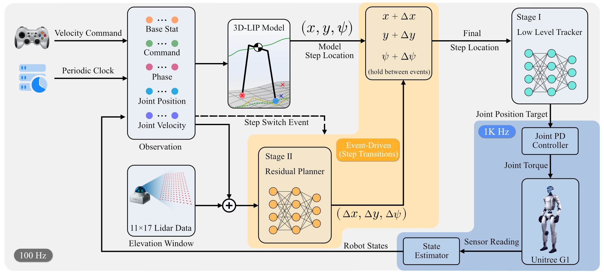

Traversing narrow beams is challenging for humanoids due to sparse, safety–critical contacts and the fragility of purely learned policies. We propose a physically grounded, two–stage framework that couples an XCoM/LIPM footstep template with a lightweight residual planner and a simple low–level tracker. Stage–1 is trained on flat ground: the tracker learns to robustly follow footstep targets by adding small random perturbations to heuristic footsteps—without any hand–crafted centerline locking—so it acquires stable contact scheduling and strong target–tracking robustness. Stage–2 is trained in simulation on a beam: a high–level planner predicts a body–frame residual (∆x, ∆y, ∆ψ) for the swing foot only, refining the template step to prioritize safe, precise placement under narrow support while preserving interpretability. To ease deployment, sensing is kept minimal and consistent be- tween simulation and hardware: the planner consumes com- pact, forward–facing elevation cues together with onboard IMU/joint signals. On a Unitree G1, our system reliably traverses a 0.2 m–wide, 3 m–long beam. Across simulation and real–world studies, residual refinement consistently outper- forms template–only and monolithic baselines in success rate, centerline adherence, and safety margins, while the structured footstep interface enables transparent analysis and low–friction sim–to–real transfer.

Stage 1 — Robust low-level tracking on flat ground.
We first train a low-level controller to realize template footsteps while staying stable under small, randomized goal perturbations (“disturbance-target training”). The policy uses only proprioception and gait phase and runs at a high rate to output joint targets. Demo setting: v_x = 0.5 m/s. During training, commands and targets were varied.
Stage 2 — Residual footstep planner in beam simulation.
A high-level planner refines the 3D LIPM/XCoM template with a small residual (Δx, Δy, Δψ) for the swing foot only. It is event-driven: queried at step transitions and held between events, using the same proprioception plus a compact elevation window from LiDAR. Demo conditions: v_x = 0.5 m/s beam = 0.20 m LiDAR 11 × 17 @ 0.1 m x: 0.1–1.1 m y: −0.8–0.8 m. This minimal representation matches hardware exactly.
Real-world deployment — Unitree G1.
We deploy both policies asynchronously on the robot: the low-level tracking policy runs at 100 Hz and sends joint position targets; a joint PD controller tracks them at 1 kHz. The residual planner is event-driven, updating on step transitions with zero-order hold between events. Real-world conditions mirror Stage 2: v_x = 0.5 m/s, beam = 0.20 m, LiDAR 11 × 17 @ 0.1 m. This architecture yields reliable beam traversal, precise foot placements, and clean sim-to-real transfer without a heavy vision stack.
@misc{huang2025traversingnarrowpathtwostage,
title={Traversing the Narrow Path: A Two-Stage Reinforcement Learning Framework for Humanoid Beam Walking},
author={TianChen Huang and Wei Gao and Runchen Xu and Shiwu Zhang},
year={2025},
eprint={2508.20661},
archivePrefix={arXiv},
primaryClass={cs.RO},
url={https://arxiv.org/abs/2508.20661},
}